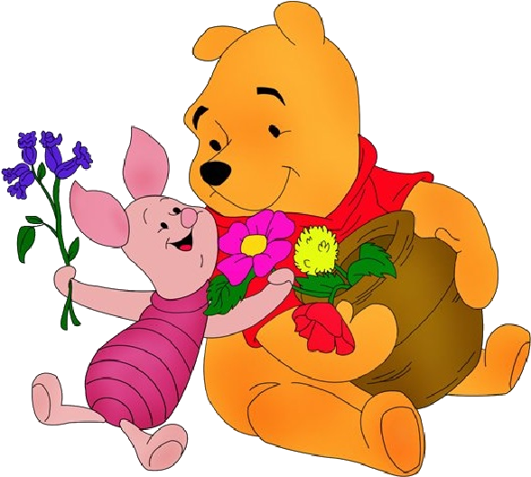

Boldog Születésnapot!
Boldog Születésnapot!
"Ígérd meg, hogy mindig emlékezni fogsz: bátrabb vagy, mint hiszed, erősebb, mint sejted, és okosabb, mint véled."
"Van úgy, hogy valaki nagyon törődik a másikkal. Azt hiszem, ezt hívják szeretetnek."
"Néha a legkisebb dolgok foglalják el a legnagyobb helyet a szívedben."
 "Malacka: “Hogy betűzik azt, hogy szeretet?” Micimackó: “Azt nem betűzik…, azt érzik.”"
“Ha valaha is lesz olyan nap, hogy nem lehetünk együtt, őrizz a szívedben. Ott örökre megtalálsz.”
“Ha nem ilyen volnál, mind szegényebbek lennénk.”
“Már minden helyen kerestelek, ahol nem vagy, csak azt a helyet nem találom, ahol vagy.
Csak azt tudom, hogy ott vagy, ahol én nem vagyok. De hol vagyok én?
Azt kívánom, bár itt lennél, hogy megmondd.
Esetleg ha nagyon-nagyon erősen kívánnám, akkor itt lennél?” "“Örökké barátok leszünk, ugye Micimackó?” – kérdezte Malacka „Még annál is tovább!” – felelte Micimackó"
"“Örökké barátok leszünk, ugye Micimackó?” – kérdezte Malacka „Még annál is tovább!” – felelte Micimackó"

"Te nem lehetsz máshol, hiszen nélküled egészen elvesznék."
"Kinek szólnék egy olyan bizonyos holnapon, amikor épp nem vagyok elég erős, vagy elég bátor? És kitől kérnék tanácsot, amikor nem tudnám, hogy merre tovább?"